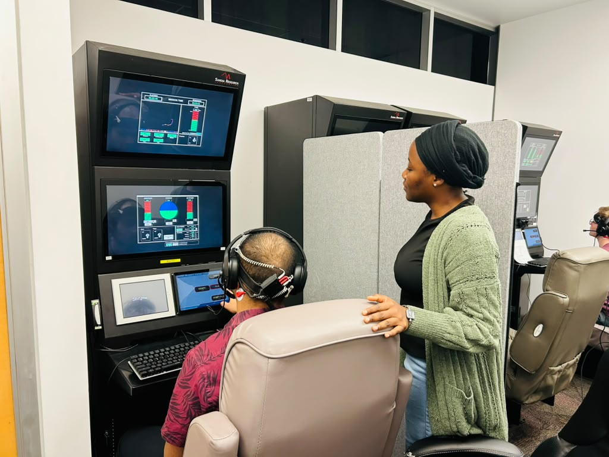
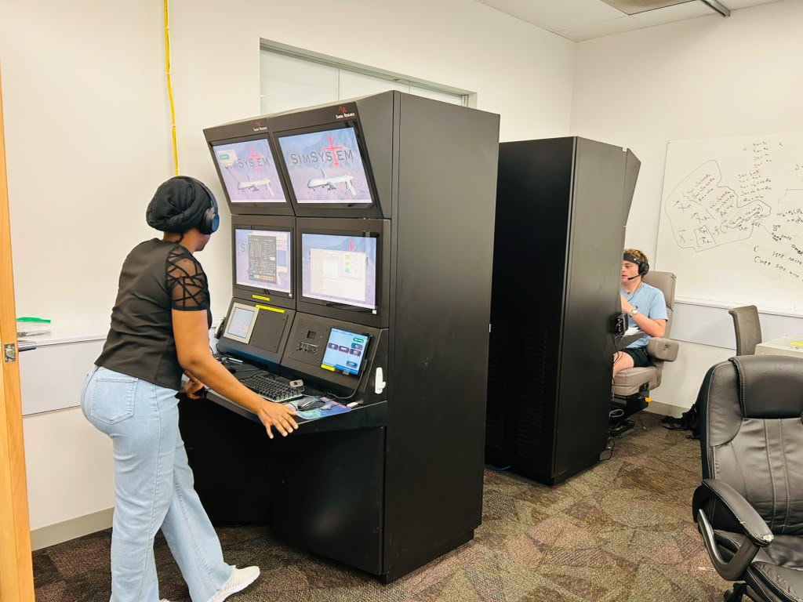
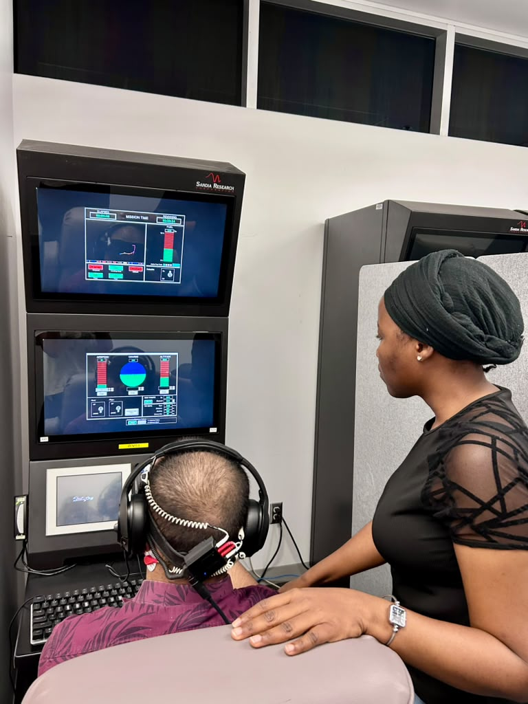

Supporting a participant during a controlled human-autonomy teaming experiment at Arizona State University.
Project Overview
As a Graduate Research Assistant in the Center for Human, Artificial Intelligence, and Robot Teaming (CHART) at Arizona State University, I contribute to a human-subjects research study evaluating the effectiveness and participant experience of the NIRSense neural stimulation device.
The study uses a controlled human-autonomy teaming environment to investigate human performance, team coordination, workload, and participant experience during collaborative tasks involving human and autonomous team members.
My work spans study preparation, participant-session support, experimental protocol implementation, behavioral data collection, data organization and quality review, usability evaluation, and research documentation.
Research Problem
Human-autonomy teams are increasingly used in aviation, robotics, healthcare, and other complex work environments. Understanding how people coordinate, communicate, and perform alongside advanced technologies is important for designing safe, effective, and human-centered systems.
This project applies human factors methods to evaluate team performance, workload, coordination, and participant experience during laboratory-based collaborative tasks.
Research in Action


Research Objectives
- Evaluate the effectiveness and usability of the NIRSense neural stimulation device.
- Examine human performance and team coordination during collaborative tasks.
- Collect and analyze behavioral and experimental research data.
- Support controlled human-subject research in human-autonomy teaming.
- Contribute to the development and evaluation of safer and more effective human-centered technologies.
My Contributions
- Supported the preparation and implementation of controlled human-subject experimental sessions.
- Assisted with participant-session coordination and implementation of established research procedures.
- Prepared and monitored the human-autonomy teaming simulation environment during experimental sessions.
- Collected, organized, and prepared behavioral and experimental research data for analysis.
- Conducted data-quality checks and supported accurate documentation of experimental sessions.
- Contributed to the evaluation of participant experience and usability of the NIRSense neural stimulation device.
- Supported survey development, measurement planning, and research documentation.
- Documented study observations and operational issues encountered during laboratory research.
- Contributed to refinement of study procedures based on observations from experimental sessions.
- Collaborated with researchers working across human factors, neurotechnology, and human-autonomy teaming.
Research Methods
- Human-subject experimental research
- Within-subjects experimental design
- Controlled laboratory experimentation
- Human-autonomy teaming research
- Behavioral and task-performance data collection
- Survey and measurement design
- Participant experience and usability evaluation
- Research protocol implementation
- Data organization and quality review
- Quantitative data analysis
Research Tools and Measures
- NIRSense neural stimulation device
- Human-autonomy teaming simulation environment
- NASA Task Load Index
- Perceived coordination measures
- Participant comfort and usability measures
- Behavioral and task-performance data
Human Factors Evaluation
A central focus of my work is understanding the human experience within the experimental system. In addition to task-performance data, the study considers workload, perceived coordination, participant comfort, usability, and experiences interacting with the experimental technology.
These measures help connect system performance with the experience of the people using the technology, supporting a human-centered approach to the evaluation of emerging neurotechnology and autonomous systems.
Skills Demonstrated
Human Factors Research • Human-Subjects Research • Human-Computer Interaction • Experimental Design • Human-Autonomy Teaming • Neurotechnology Evaluation • Behavioral Data Collection • Usability Evaluation • Survey Design • Research Protocol Implementation • Data Quality Assurance • Laboratory Research • Quantitative Analysis • Research Documentation • Interdisciplinary Collaboration
Research Impact
This project contributes to research examining the relationship between neurotechnology, human performance, workload, coordination, and participant experience in complex team environments.
By combining controlled experimentation, behavioral measures, participant experience measures, and human-autonomy teaming tasks, the research contributes to understanding how emerging technologies can be evaluated from both performance and human-centered perspectives.
The broader goal is to inform the design and evaluation of safer, more effective, and more human-centered technologies for collaborative work.
Research Appointment
Graduate Research Assistant
Center for Human, Artificial Intelligence, and Robot Teaming (CHART)
Arizona State University
I work under the supervision of Professor Jamie C. Gorman on a study evaluating the effectiveness of the NIRSense neural stimulation device, with responsibilities involving laboratory-based data collection, study implementation, data quality review, and analysis.